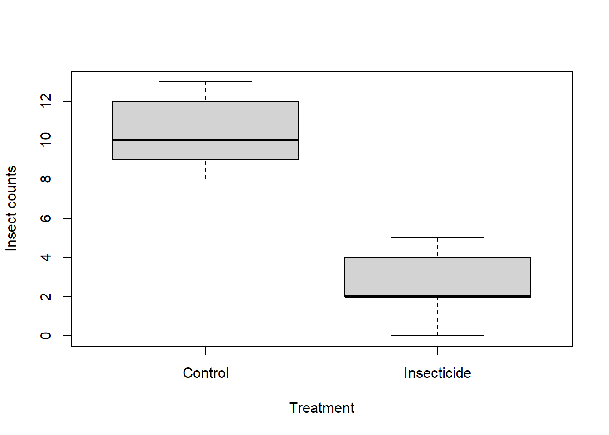

treat_ctrl = c(8, 9, 10, 9, 9, 12, 12, 12, 13, 10)
treat_insect = c(2, 5, 2, 0, 2, 3, 4, 4, 2)3 A gentle first analysis
This chapter provides a concrete example of R’s usefulness by guiding you through a simple data analysis scenario. You will create an R script, enter data and use R to explore the data, visualise it, create statistical summaries and conduct a statistical test. By the end you will have a concise, reproducible workflow covering all the essential steps you used and a document for others to replicate your work.
3.1 The scenario
You have collected the counts of insects on different individual plants under two experimental treatments - one with an insecticide and another as a control treatment without the insecticide.
Control treatment: 8, 9, 10, 9, 9, 12, 12, 12, 13, 10
Insecticide treatment: 2, 5, 2, 0, 2, 3, 4, 4, 2
Let’s enter these data into R and see how we can easily analyse the data.
Create a new R script and copy the code below to the script as you work through the section. Include comments where necessary.
3.2 Simple data entry
We use the c() function to create simple vectors. Think of these of sets of related values. Keep in mind that this method is suitable for quick data entry, and not the typical method for entering data into R.
We can verify that the data has been entered correctly into R by either 1) printing the values to the console, or 2) examining the “Environment” panel in RStudio (located in the top-right).
treat_ctrl [1] 8 9 10 9 9 12 12 12 13 10treat_insect[1] 2 5 2 0 2 3 4 4 2Image of RStudio environment Error rendering placeholder
3.2.1 Data visalisation
We can use one of R’s various plotting functions to visualize and better understand the patterns within the data. For example, the boxplot() function create boxplots. In this case, we pass the two vectors, one after the other to boxplot(). While this would create a basic plot, we want to add informative axis labels. To label each boxplot along the x-axis, we use the names= argument and provide a vector containing two text values. To label the x-axis and y-axis, we use the ylab= and xlab= arguments, respectively, with single text values of the axis titles. Note the use of quotation marks (") for these text values.
boxplot(treat_ctrl, treat_insect,
names = c('Control', 'Insecticide'),
xlab = "Treatment",
ylab = 'Insect counts')
3.2.2 Statistical summaries
We can obtain simple statistical summaries with such functions as mean(), median(), sd(), range(). As you might notice, this involves a fair amount of typing. We will learn more efficient methods for obtaining these summaries later.
mean(treat_ctrl)
mean(treat_insect)[1] 10.4
[1] 2.666667sd(treat_ctrl)
sd(treat_insect)[1] 1.712698
[1] 1.5length(treat_ctrl)
length(treat_insect)[1] 10
[1] 93.2.3 A statistical test
We can use a t.test() to statistically compare the means of values from the two treatment groups. We pass the two vectors, one after the other, to the t.test() function to conduct a t-test. We include the argument var.equal = TRUE for a traditional t.test.
The output of t.test() provides various information about the statistics involved in a t-test. The t statistic, degrees of freedom and p value are present. The p-value (4.177e-08) is less than 0.05, leading us to conclude that there is a statistically significant difference between the means of the two treatment groups. The mean of the control group (mean of x, 10.4) is greater than the mean of the insecticide treatment (mean of y, 2.67).
t.test(treat_ctrl, treat_insect, var.equal = TRUE)
Two Sample t-test
data: treat_ctrl and treat_insect
t = 10.415, df = 17, p-value = 8.508e-09
alternative hypothesis: true difference in means is not equal to 0
95 percent confidence interval:
6.166701 9.299966
sample estimates:
mean of x mean of y
10.400000 2.666667 3.2.4 What your script should look like
Having worked through the section and copying the code across to your own computer, your script should resemble the code below. If all is good, save script to your computer. Well done! You just created your first analysis script.
# Data input
treat_ctrl = c(8, 9, 10, 9, 9, 12, 12, 12, 13, 10)
treat_insect = c(2, 5, 2, 0, 2, 3, 4, 4, 2)
# Data check
treat_ctrl
treat_insect
# Data visualisation
boxplot(treat_ctrl, treat_insect,
names = c('Control', 'Insecticide'),
ylab = 'Insect counts')
# Data summaries
mean(treat_ctrl)
mean(treat_insect)
sd(treat_ctrl)
sd(treat_insect)
length(treat_ctrl)
length(treat_insect)
# Comparison of means between treaments using t-test
t.test(treat_ctrl, treat_insect var.equal = TRUE)3.3 Summary
This chapter provided a hands-on experience with R for basic data analysis, demonstrating input raw data and [generate insights]. You learned a fundamental way to handle data in R: using vectors for simple, quick entry. Through a practical example of insect counts under different treatments, you explored key steps in a data analysis workflow: data input, data visualization using boxplots, calculating basic statistical summaries like the mean, standard deviation, and number of values (length), and performing a statistical test (t-test) to compare group means. You recorded all the steps in an R script - a recipe for the analysis workfllow - and which in a fundamental unit of reproducible analysis. In the next chapter, we will conduct the same analysis but using R preferred tabular data structure - the data.frame.